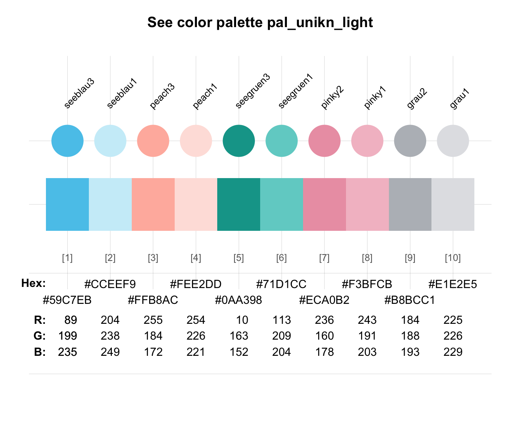
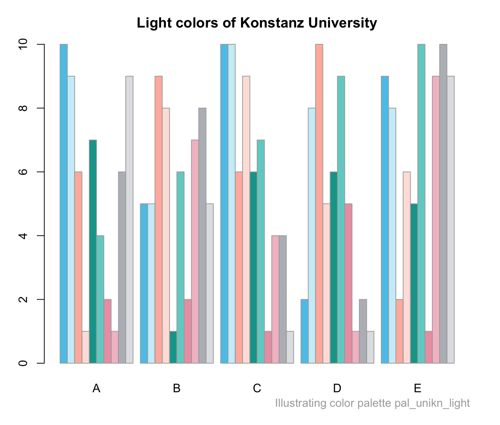

pal_unikn_light provides an additional uni.kn color palette
that collects 2 light colors of 5 color palettes
as a data frame containing 10 colors (in 5 pairs).
Details
See https://www.uni-konstanz.de/en/university/news-and-media/create-online-and-print-media/corporate-design/ for details.
See also
pal_unikn_dark for a darker uni.kn color palette;
pal_unikn_pair for a pairwise uni.kn color palette;
pal_unikn for the default uni.kn color palette;
seecol for viewing and comparing color palettes;
usecol for using color palettes.
Other color palettes:
pal_bordeaux,
pal_grau,
pal_karpfenblau,
pal_peach,
pal_petrol,
pal_pinky,
pal_seeblau,
pal_seegruen,
pal_signal,
pal_unikn,
pal_unikn_dark,
pal_unikn_pair,
pal_unikn_ppt,
pal_unikn_pref,
pal_unikn_web
Examples
pal_unikn_light
#> seeblau3 seeblau1 peach3 peach1 seegruen3 seegruen1 pinky2 pinky1 grau2
#> 1 #59C7EB #CCEEF9 #FFB8AC #FEE2DD #0AA398 #71D1CC #ECA0B2 #F3BFCB #B8BCC1
#> grau1
#> 1 #E1E2E5
dim(pal_unikn_light) # 1 10
#> [1] 1 10
# Access by position:
pal_unikn_light[1] # color "seeblau3" (as df)
#> seeblau3
#> 1 #59C7EB
pal_unikn_light[[1]] # color value "#59C7EB"
#> [1] "#59C7EB"
# Access by name:
pal_unikn_light["seeblau3"] # color "seeblau3" (as df)
#> seeblau3
#> 1 #59C7EB
pal_unikn_light[["seeblau3"]] # color value "#59C7EB"
#> [1] "#59C7EB"
# Viewing/using color palette:
seecol(pal_unikn_light)

demopal(pal_unikn_light, type = "bar", main = "Light colors of Konstanz University")
